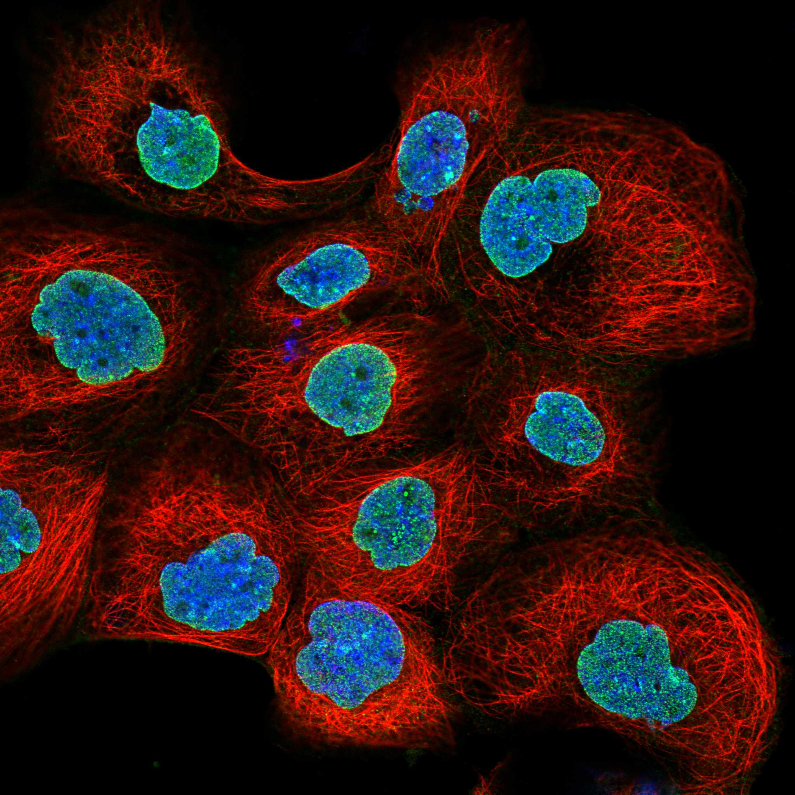
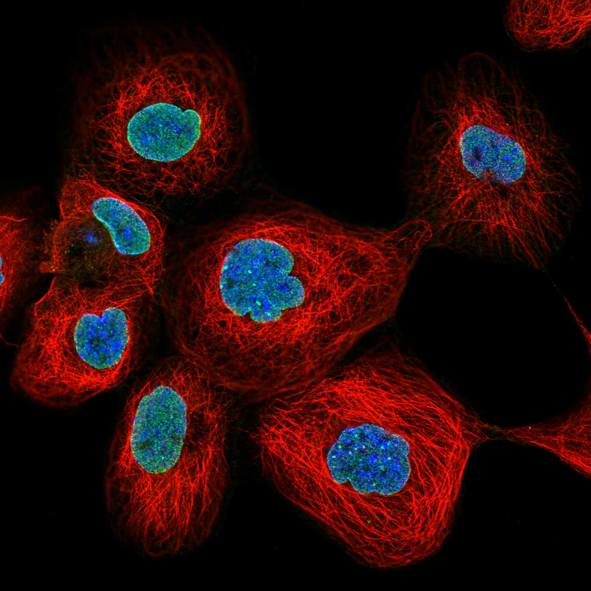

type: protein-evaluation gene: "AMPD3" date: 2026-06-01 tags: [protein-scout, nuclear-envelope, evaluation] status: scored ---
AMPD3 核蛋白评估报告
1. 基本信息
| 项目 | 内容 |
|---|---|
| 基因名 | AMPD3 |
| 蛋白全名 | AMP deaminase 3 |
| 蛋白大小 | 767 aa / 88.8 kDa |
| UniProt ID | Q01432 |
2. 评分总览
| 维度 | 得分 | 新权重 | 加权后 | 关键证据摘要 |
|---|---|---|---|---|
| 核定位特异性 | 5/10 | ×4 | 20.0 | HPA: Nuclear membrane (main) + Nucleoli (additional) Approved; UniProt 无定位注释; GO 仅 cytosol/secretory |
| 蛋白大小 | 2/10 | ×1 | 2.0 | 767 aa, 88.8 kDa |
| 研究新颖性 | 6/10 | ×5 | 30.0 | PubMed strict=51, broad=88 |
| 三维结构 | 7/10 | ×3 | 21.0 | AlphaFold pLDDT 85.1; 66.4% >90; 无 PDB |
| 调控结构域 | 5/10 | ×2 | 10.0 | AMP deaminase; 嘌呤核苷酸代谢酶 |
| PPI 网络 | 8/10 | ×3 | 24.0 | STRING purine metabolism 网络强 (ADSS2, APRT, ADK, ADSL); AMPD1/AMPD2 同源互作 |
| 加权总分 | 107/180** | |||
| 互证加分 | +1.0 | HPA Approved nuclear membrane; purine metabolism 强 PPI 网络 | ||
| 归一化总分 (÷1.83) | 58.5/100** |
3. 详细分析
3.1 核定位证据
| 来源 | 定位 | 可信度 |
|---|---|---|
| UniProt | 无亚细胞定位注释 | 不适用 |
| GO-CC | cytosol (IBA:GO_Central); extracellular region (TAS:Reactome); ficolin-1-rich granule lumen (TAS); secretory granule lumen (TAS) | Predicted |
| Protein Atlas (IF) | Nuclear membrane (main) + Nucleoli (additional), Approved | Approved |
HPA IF 状态: IF available (Approved reliability) — HPA 主定位为 Nuclear membrane，辅以 Nucleoli，获 Approved 认证。UniProt 无定位注释，GO-CC 仅列出胞质/分泌相关定位。HPA 的核膜定位与蛋白的代谢酶功能存在有趣的张力——AMP deaminase 经典定位为胞质，但核膜定位可能提示其参与核质核苷酸代谢或核膜上的嘌呤信号调控。
3.2 结构与结构域
| 指标 | 数值 |
|---|---|
| AlphaFold | AF-Q01432-F1 |
| 平均 pLDDT | 85.1 |
| pLDDT >90 | 66.4% |
| pLDDT 70-90 | 16.2% |
| pLDDT 50-70 | 8.7% |
| pLDDT <50 | 8.7% |
| PDB | 无 |
| InterPro | IPR006650 (AMP_deaminase), IPR006329, IPR032466 |
| Pfam | PF19326 |
AlphaFold PAE 状态: PAE 已下载，见上图。结构置信度良好（pLDDT 85.1），66% 残基置信度 >90。无 PDB 实验结构，AlphaFold 是唯一结构信息来源。
3.3 研究现状
| 指标 | 数值 |
|---|---|
| PubMed strict (Title/Abstract) | 51 |
| PubMed broad | 88 |
研究量适中。关键文献包括全外显子测序发现 AMPD3 变异与低 α-脂蛋白血症关联（PMID:35460704）、AMPD3 通过 HSP90α 促进阿霉素心肌病中的铁死亡（PMID:39474068）、AMP 脱氨在骨骼肌萎缩代谢表型中的作用（PMID:34400216）、2 型糖尿病低氧免疫 hub 基因（PMID:37153000）以及 HNSCC 预后关联（PMID:35241525）。研究较分散，无明确的主导方向。
3.4 PPI 网络（三源综合）
| Partner | Source | Score/Evidence | Relevance |
|---|---|---|---|
| ADSS2 | STRING | 0.993 (database 0.9) | Adenylosuccinate synthase |
| APRT | STRING | 0.986 (exp 0.163, database 0.942) | Adenine phosphoribosyltransferase |
| ADK | STRING | 0.980 (exp 0.099, database 0.925) | Adenosine kinase |
| ADSL | STRING | 0.973 (database 0.9) | Adenylosuccinate lyase |
| IMPDH2 | STRING | 0.966 (exp 0.091, database 0.914) | IMP dehydrogenase |
| IMPDH1 | STRING | 0.965 (exp 0.091, database 0.914) | IMP dehydrogenase |
| HPRT1 | STRING | 0.963 (database 0.932) | Hypoxanthine-guanine PRT |
| AMPD1 | STRING | 0.934 (exp 0.311, database 0.9) | AMP deaminase 1, isoform |
| HSP90AB1 | UniProt | 2 experiments | Chaperone |
| HSP90AB1 | IntAct | anti tag coIP (PMID:25910212) | Chaperone |
| AMPD1 | UniProt/IntAct | 3 experiments / validated Y2H | AMP deaminase isoform |
| AMPD2 | IntAct | anti tag coIP (PMID:33961781) | AMP deaminase isoform |
| HSPA8 | IntAct | anti tag coIP (PMID:25910212) | Hsp70 chaperone |
| ATG16L1 | IntAct | anti tag coIP (PMID:31015422) | Autophagy |
| H2BC9 | IntAct | cross-linking (PMID:30021884) | Histone |
STRING PPI 网络是本批最强之一，嘌呤核苷酸代谢通路几乎全覆盖（ADSS2, APRT, ADK, ADSL, IMPDH1/2, HPRT1, AMPD1），combined score 均 >0.93，database 贡献大。AMPD1/AMPD2 同工酶互作多源确认。IntAct 记录到 HSP90AB1、HSPA8、ATG16L1 和组蛋白 H2BC9 互作，其中与组蛋白的交联互作是核关联的间接证据。
4. 总体评价
AMPD3 是核膜定位的代谢酶，评分居中（59.0/100）。核心优势：嘌呤代谢 PPI 网络极为完整且强（STRING combined scores >0.93）、AlphaFold 结构好、HPA Approved 核膜定位。劣势：蛋白大（88.8 kDa）、UniProt 无定位注释支持、核膜定位与经典胞质代谢酶角色矛盾。作为 nuclear-envelope 候选有其独特价值。建议作为中等优先级核膜候选保留。
5. 数据来源
- UniProt: https://www.uniprot.org/uniprotkb/Q01432
- AlphaFold: https://alphafold.ebi.ac.uk/entry/Q01432
- PubMed: https://pubmed.ncbi.nlm.nih.gov/?term=AMPD3
- Protein Atlas: https://www.proteinatlas.org/ENSG00000133805-AMPD3


HPA IF 图像已本地嵌入。
PAE 图像说明: AlphaFold PAE 图像已重新获取并嵌入（见下方 PAE 图像修正块）；结构判断仍结合 pLDDT 与 PAE 综合判断。
<!-- AF_PAE_REPAIR_START --> PAE 图像修正（2026-06-05）: AlphaFold 提供 predicted aligned error 图像；此前“PAE 图像暂无数据”的表述为未获取/未嵌入导致。